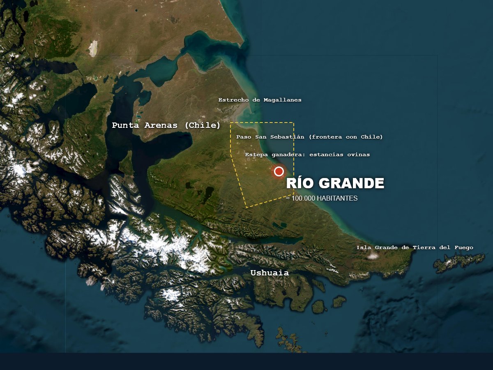
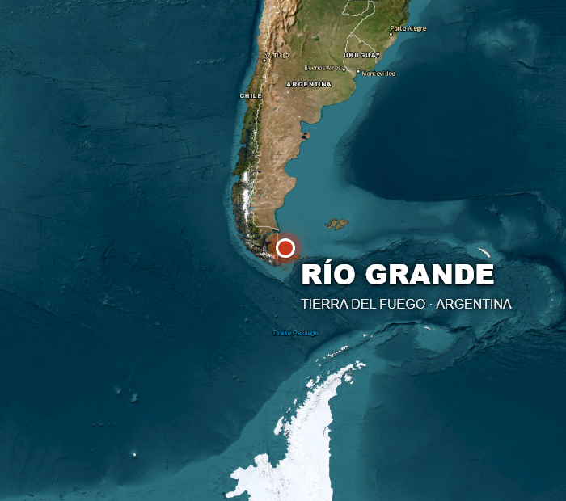
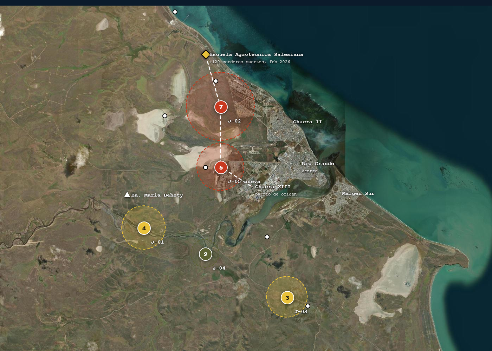
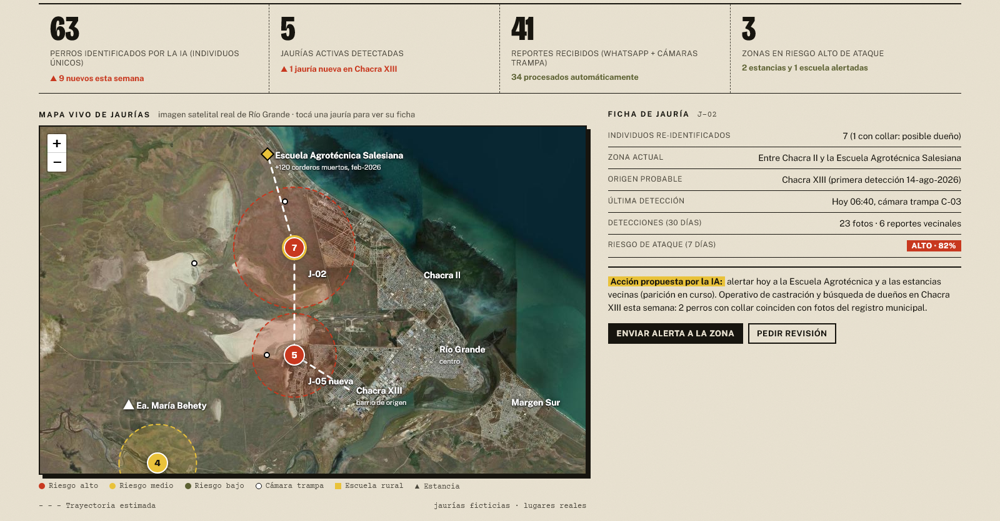
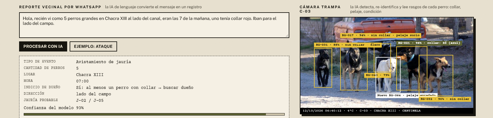

Una red de alerta temprana con inteligencia artificial para frenar las jaurías de perros asilvestrados antes de que ataquen.



corderos muertos en un solo ataque a la Escuela Agrotécnica Salesiana, febrero de 2026
perros distintos identificados a mano con cámaras trampa en la isla; +226% de detecciones en cinco años
animales muertos o heridos del lado chileno de la isla, 2012 a 2025; más del 80% por perros
La ley provincial ya declara al perro asilvestrado especie exótica invasora y prevé programas de control, pero casi no se aplica. Falta lo básico: saber cuántos perros hay, dónde están, de qué barrio salen y hacia dónde van. Sin ese dato, municipio, productores y científicos actúan a ciegas y siempre tarde.
Tarea: detectar perros en cada foto y re-identificar individuos por pelaje, tamaño y marcas, para contar perros reales y no detecciones repetidas.
Datos: fotos con fecha y GPS.
Resultado: ficha por perro y por jauría.
Tarea: leer mensajes informales ("vi 5 perros en Chacra XIII a las 7, uno con collar") y extraer lugar, hora, cantidad, indicio de dueño y dirección.
Datos: WhatsApp y Facebook de vecinos.
Resultado: registros que hoy se pierden.
Tarea: cruzar jaurías, estancias, escuelas y época de parición para estimar el riesgo de ataque por zona en los próximos 7 días.
Datos: historial de detecciones y ataques.
Resultado: ranking semanal de intervención.
Identificar 117 perros a mano llevó años de trabajo científico.
Los reportes vecinales mueren en grupos de WhatsApp.
Nadie sabe de qué barrio sale cada jauría: se actúa después del ataque.
Re-identificación en minutos, continua y con cada foto nueva.
Cada mensaje se vuelve un dato en el mapa.
Se interviene en el origen (castración, dueños) antes del ataque.
Ética y control humano. La IA propone; Zoonosis municipal, la Asociación Rural y el CADIC revisan. No identifica personas y los reportes son anónimos. No recomienda matar animales: prioriza castración, tenencia responsable y devolución de perros con dueño. Cada corrección humana entrena al modelo.


Zoonosis municipal · Asociación Rural de Tierra del Fuego · CADIC e INTA · Escuela Agrotécnica Salesiana · vecinos de Chacra XIII y Margen Sur.
Perros asilvestrados atacan ganado y fauna en toda la Patagonia argentina y chilena, en Uruguay, en la Puna y en zonas rurales de todo el continente. Centinela solo necesita tres cosas que existen en cualquier lugar: celulares, un municipio y productores con ganas de reportar.